Sessions close after inactivity, and release builds block risky device states.
Secure BELDEX vault
Secure BELDEX account vault.
BELDEX Vault keeps BELDEX accounts, protected passwords, live prices, news, reminders, documents, backups, and Nexus access in one focused mobile app.
- Two-step onboarding for vault access and password protection
- Encrypted records, secure notes, documents, and backup restore
- Live prices, News, reminders, filters, and Nexus helper built in
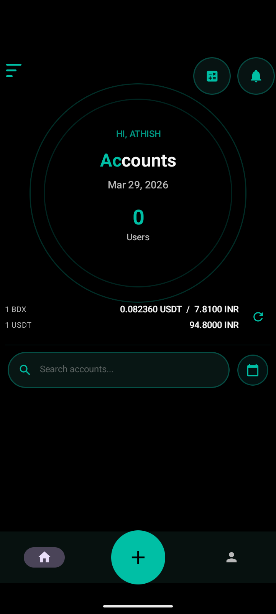
Export and restore vault data using a protected .beldexvault file.
Find records by name, ID, date, or coin amount, then verify before sensitive actions.
At a glance
A complete vault workflow for BELDEX users.
Guided setup
Create secure access first, then choose a shared verification method for BELDEX and transfer passwords.
Sensitive actions verify first
Password reveal, copy, and Nexus actions require verification before credentials are exposed.
Records with context
Save account ID, password details, email, phone, coin amount, secure notes, documents, and reminders.
Encrypted backup restore
Move to a new phone with encrypted export and restore, guarded by stronger backup passwords.
Useful every day
More than storage: live prices, News, reminders, filters, and Nexus support.
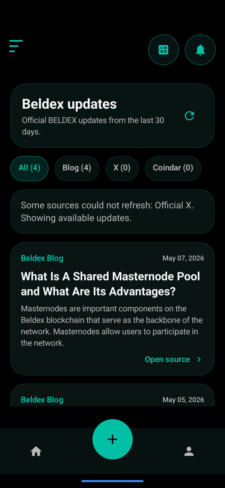
Live market context
Refresh BDX and USDT values from the Home screen. If a source fails, saved data remains available and vault usage continues.
News from BELDEX sources
News keeps official updates, X posts, and event sources in a separate page with source filters and safe failure handling.
Nexus helper with fallback
Verify first, copy the short credential payload, open Nexus in-app, and use the Chrome fallback when manual paste is safer.
How it works
One clean path from first setup to daily account access.
Step 1
Create secure vault access
Users create their profile and vault PIN before any account data is stored.
- Name and vault PIN are set first
- Fingerprint unlock is optional when supported
- The screen is keyboard-safe on compact phones

Screens
Explore the key screens across setup, Home, News, tools, backup, Nexus, and tablet layouts.
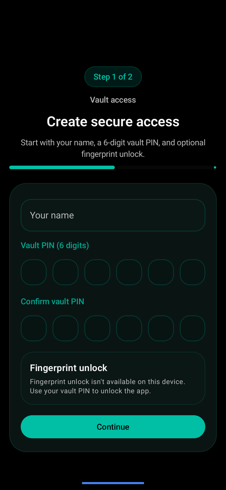
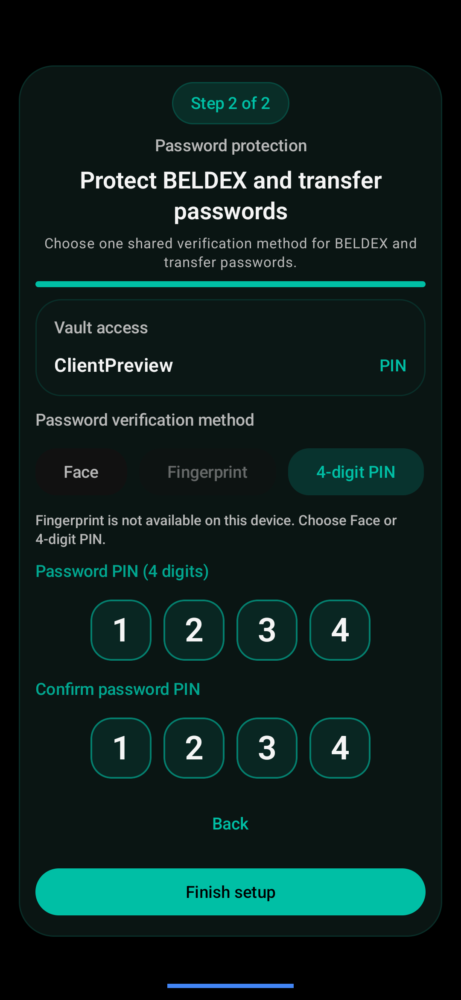
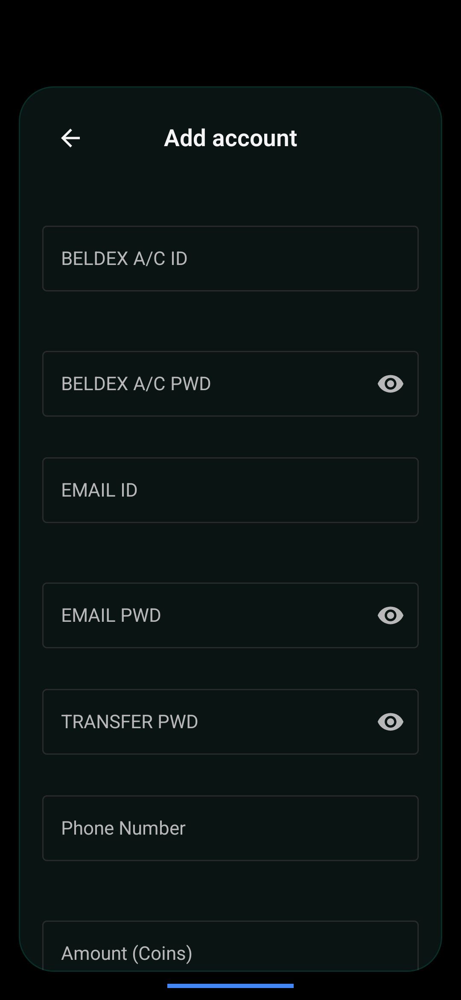
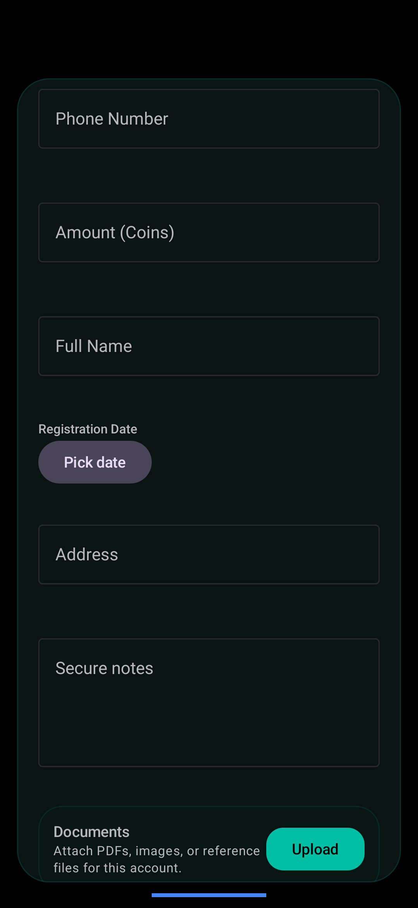
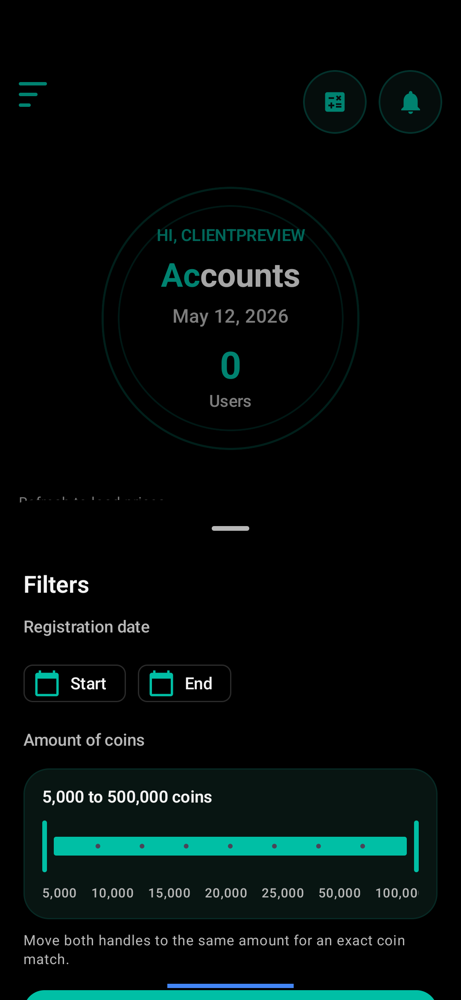
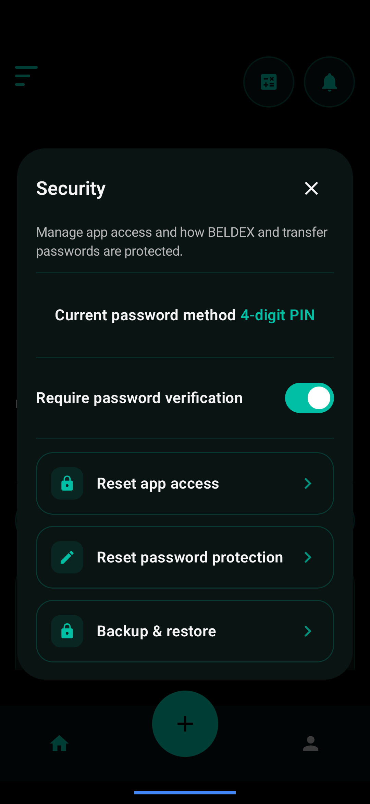
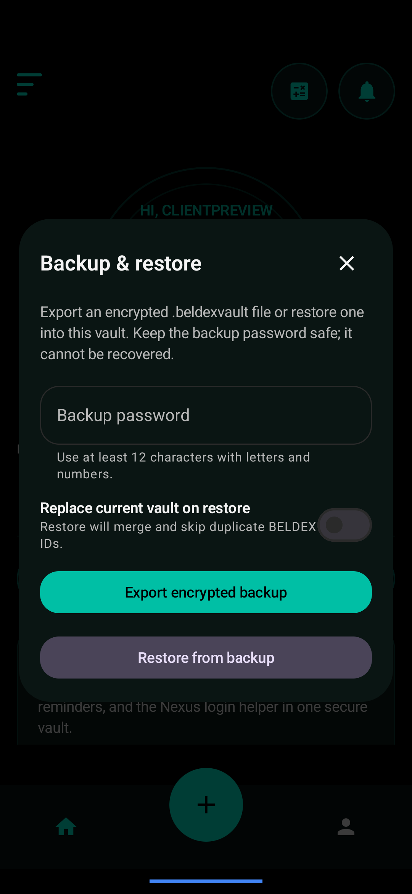
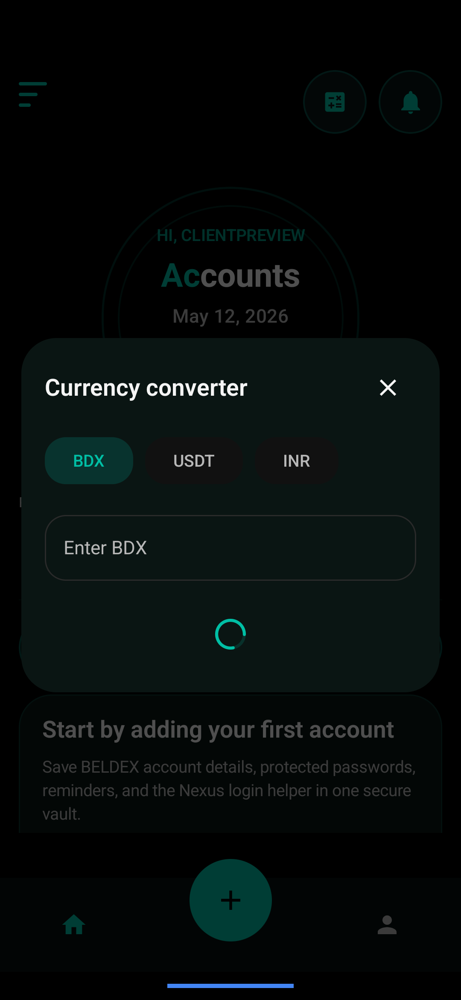
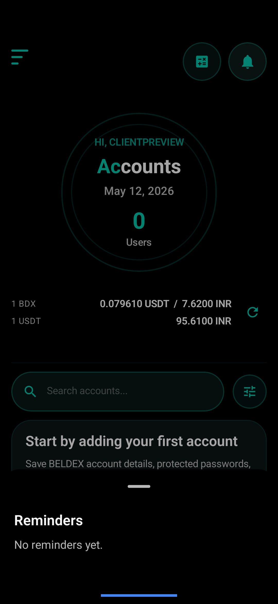
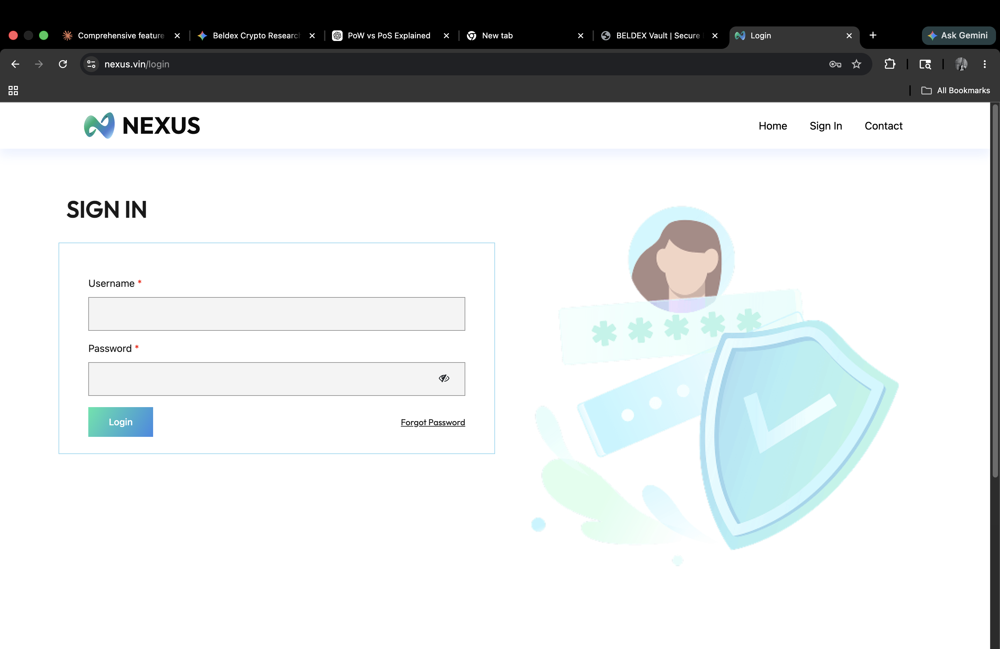
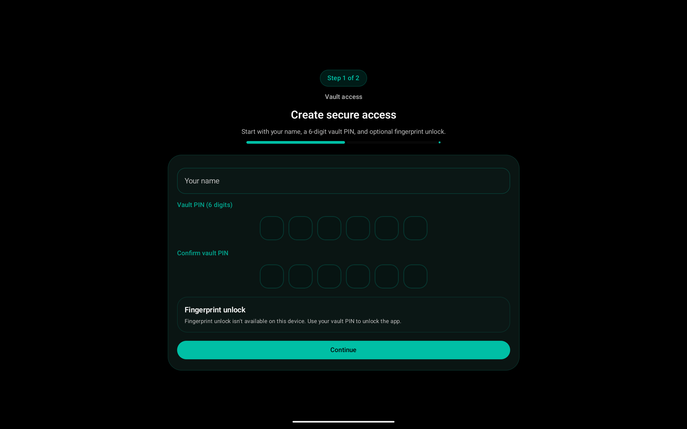
Security and recovery
Built for sensitive records, practical recovery, and safer daily use.
Escalating lockouts
Repeated wrong vault or password PIN attempts trigger timed lockouts up to 10 minutes.
10-minute session timeout
The vault locks after inactivity or time in the background, reducing exposure on shared or unattended devices.
Encrypted backups
Exported .beldexvault files are encrypted and require a stronger backup password before restore.
Encrypted documents
Documents are stored as encrypted attachments and opened through controlled temporary files.
Clipboard auto-clear
Copied credentials are kept short and cleared automatically when the device allows it.
Release privacy controls
Production builds protect sensitive screens and block unsupported device states.
Built-in capabilities
Everything BELDEX account owners need is organized into clear, secure daily workflows.
Search and filters
Search includes account text and coin amount. The filter sheet combines date filtering with fixed coin-range values.
5K25K100K500K
Reminders
Each account can use reminder options like Off, Always, Review in 30 days, 60 days, or 90 days.
Always30 days90 days
News and prices
Network failures are isolated. Users can keep using the vault while prices or news show saved data or source-specific messages.
BlogXCoindar
Documents and notes
Secure notes stay separate from document attachments, keeping records organized without mixing free text and files.
NotesDocumentsOpen
Detailed understanding
Open each item for the complete feature story.
What BELDEX Vault stores
Records can include BELDEX account ID, BELDEX password, transfer password, email, phone, coin amount, secure notes, encrypted documents, reminders, and last-checked context.
How Nexus access works
The app verifies first, copies a short A/c and Pwd payload, opens Nexus in the app, and offers Chrome fallback for manual paste when needed.
How backup and restore works
Users export an encrypted .beldexvault backup and restore it later with the backup password. Restore requires explicit confirmation before replacing data.
How errors are handled
Market and News failures never block vault usage. The app shows clear messages, uses saved data where possible, and keeps Home and Contacts available.
How account completion helps
A small progress indicator shows whether important fields are complete without turning account cards into a noisy checklist.
How layouts adapt
The interface is tuned for compact phones, landscape phones, foldable guardrails, and tablets with responsive cards, overlays, and navigation.
Client-ready product story
Setup, protect, retrieve, recover, and stay informed from one vault.
BELDEX Vault is designed for people who need a focused, secure place to manage BELDEX account records and daily account tasks without scattered notes or unsafe copying habits.